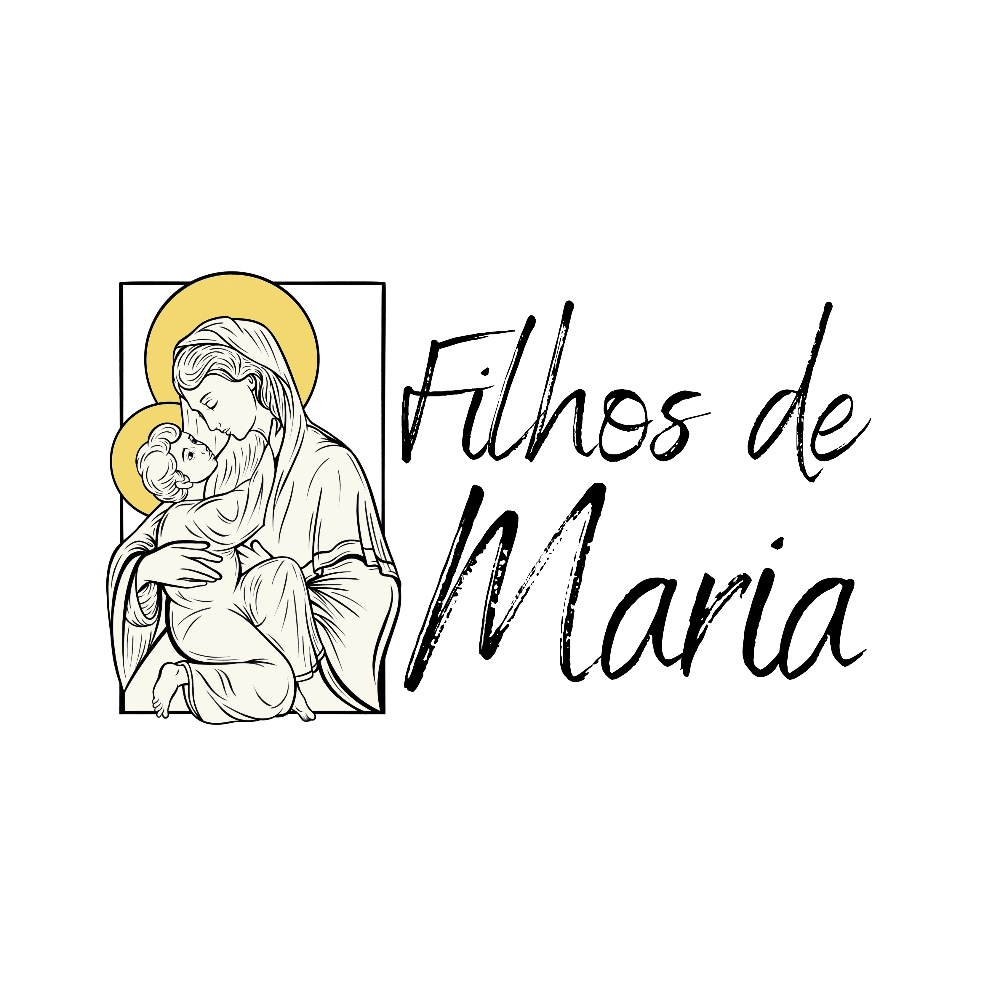

☰
Palavra do Dia
Música
Vídeos
Pedido de Oração
Instagram
CRM
Liturgia Diária

Filhos de Maria
Palavra do Dia
Carregando...
Liturgia Diária
Carregando...
Minimizar
Seu navegador não suporta o elemento de áudio.
PlayList Filhos de Maria
Vídeos Inspiradores
Ver mais no YouTube
Pedido de Oração
Enviar
Acender uma Vela Virtual
Acender Vela
Instagram
Ver mais no Instagram
Área Administrativa
Faça login para acessar o CRM Filhos de Maria.
Acessar CRM
Liturgia Diária
Carregando...
Minimizar